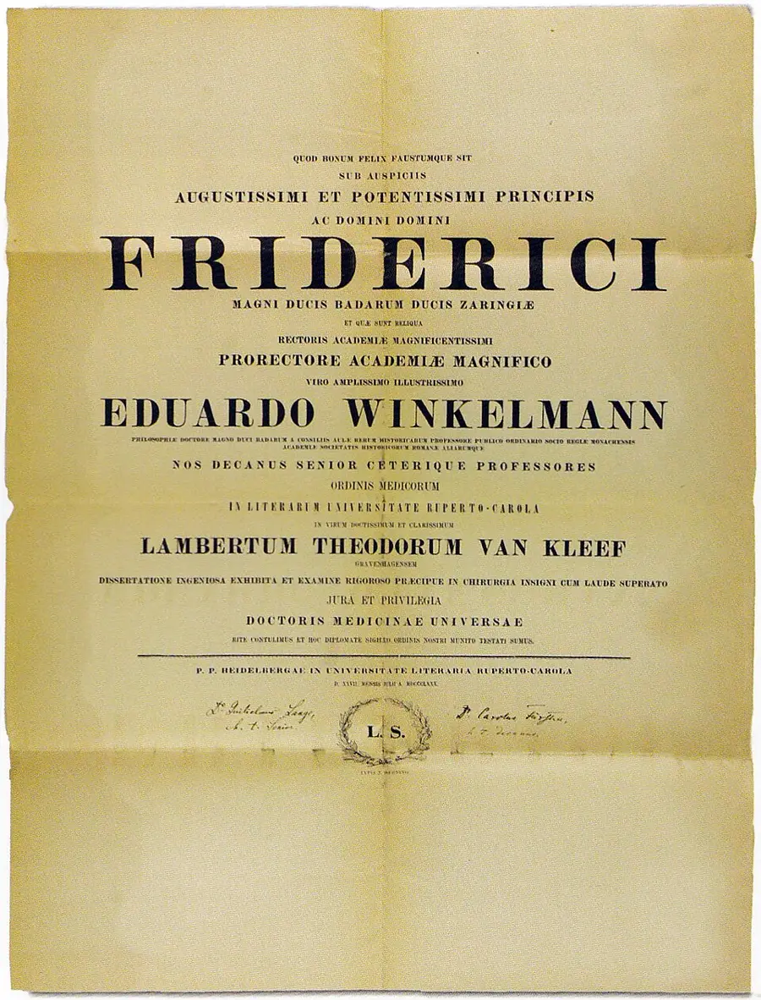

대표 로고대표 브랜드 마크
대표 로고대표 브랜드 마크하이델베르크 대학교 Heidelberg University
루프레히트-카를 하이델베르크 대학교(Heidelberg University)는 독일 바덴뷔르템베르크주 하이델베르크에 있는 대학이다. 현재 독일 연방 공화국에서 가장 오래된 대학이며, 약 630년의 역사를 갖고 있다.
최종 업데이트
하이델베르크 대학교는 어떤 브랜드인가
이 대학교는 신성로마제국의 알프스 산맥 북쪽에서 3번째로 설립된 대학이다. 1890년에 자연과학부가 5번째 학과로 처음으로 독립하여 추가되기 전까지는 4개의 학부(신학, 법학, 의학, 철학)로 구성되었다.
1969년에는 16개의 특성화된 학부로 나뉘었다가 2002년에 다시 새롭게 개편되어 지금의 12 학부로 나뉘었다. 설립 직후 빠르게 성장하여 1390년 3월에 185명의 학생이 등록했다.
하이델베르크 대학교는 어떻게 시작되고 성장했나
14세기 중반까지 독일연방공화국에는 대학이 없었다. 1378년 교회 대분열이 발생하면서 하이델베르크는 자기 지역 고유의 대학교를 설립할 수 있는 기회를 얻었다.
팔츠 선제후 루프레히트 1세는 로마 교황청과의 대화를 통해 교황 우르바노 6세로부터 대학교 설립을 위한 교황의 칙서를 얻었다. 1386년 6월 26일에 루프레히트 1세의 명령하에 대학 설립에 관한 최종 결정이 확정되었다.
이 대학교는 교황 헌장에 규정된 대로 파리대학교를 모델로 삼았으며, 1386년 10월 19일에 첫 번째 강의가 개설되었다.
하이델베르크 대학교의 브랜드 아이덴티티는 무엇인가
이 대학교는 독일에서 가장 오래된 역사를 가진 교육 기관으로서, 수세기 동안 학부 구성을 재편하며 학문적 발전을 지속해왔다.
하이델베르크 대학교의 대표 제품과 서비스는 무엇인가
하이델베르크 대학교는 철학, 신학, 법학, 의학 학부를 포함하는 학문적 구성을 가졌다. 처음에는 신학부와 철학부에서만 강의가 이루어졌으며, 법학부는 1386년 말에, 의학부는 1388년에 모습을 갖추었다.
1890년에는 자연과학부가 5번째 학과로 독립하여 추가되었고, 1969년에는 16개의 특성화된 학부로 나뉘었다. 2002년 개편을 통해 지금의 12 학부로 구성되어 다양한 학문 분야를 제공한다.
하이델베르크 대학교는 지금 어떤 상태인가
이 대학교는 2002년에 새롭게 개편되어 현재 12개의 학부로 나뉘어 운영된다. 과거 1969년 16개의 특성화된 학부로 나뉘었던 구조에서 변화를 거쳤다.
하이델베르크 대학교 로고는 어떻게 변해왔나
대표 로고대표 브랜드 마크사진으로 보는 하이델베르크 대학교의 역사

자주 묻는 질문
하이델베르크 대학교는 어느 나라 브랜드인가요?
하이델베르크 대학교는 독일의 브랜드·비즈니스 브랜드입니다.
하이델베르크 대학교의 브랜드 아이덴티티는 무엇인가요?
이 대학교는 독일에서 가장 오래된 역사를 가진 교육 기관으로서, 수세기 동안 학부 구성을 재편하며 학문적 발전을 지속해왔다.
하이델베르크 대학교의 대표 제품은 무엇인가요?
하이델베르크 대학교는 철학, 신학, 법학, 의학 학부를 포함하는 학문적 구성을 가졌다.
하이델베르크 대학교는 현재 어떤 상태인가요?
이 대학교는 2002년에 새롭게 개편되어 현재 12개의 학부로 나뉘어 운영된다.
하이델베르크 대학교의 창업자는 누구인가요?
하이델베르크 대학교의 창업자는 Rupert I, Elector Palatine입니다(위키데이터 기준).
하이델베르크 대학교의 본사는 어디에 있나요?
하이델베르크 대학교의 본사는 하이델베르크에 있습니다(위키데이터 기준).
하이델베르크 대학교의 공식 웹사이트는 어디인가요?
하이델베르크 대학교의 공식 웹사이트는 https://www.uni-heidelberg.de/ 입니다.
출처와 검증
하이델베르크 대학교 관련 참고: 공식 웹사이트 · 위키데이터 Q151510 · 한국어 위키백과 · 영어 위키백과. 브랜드명은 한글과 원어를 함께 표기하되 데이터에 없는 표기는 만들지 않습니다. 기원 국가·설립연도는 검수된 정의문에서 확인된 값을 우선하고, 없을 때만 공식 웹사이트 URL이 일치하는 위키데이터 개체의 값을 씁니다. 탄생일의 월·일은 위키데이터, 위키백과 정보상자, 본문 가운데 같은 연월로 확인되는 값만 싣고, 출처끼리 다르면 싣지 않습니다. 웹 첫 보관은 인터넷 아카이브가 공식 사이트 첫 화면을 처음 보관한 날로, 사이트 개설일과 다를 수 있습니다. 위키데이터 값은 2026-09-07 기준입니다.